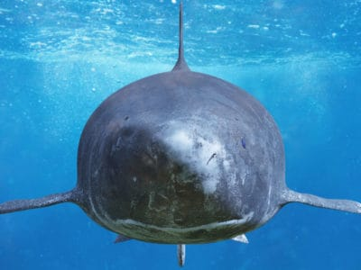

Kingdom : Animalia
Phylum :Chordata
Class :Chondrichthyes
Order : Squaliformes
Family : Somniosidae
Genus : Somniosus
Scientific Nam : Somniosus pacificus
Fun Fact: In 2015, a Pacific Sleeper Shark was filmed living
underneath an active volcano near the Solomon Islands. This shark is
able to survive in waters with very high temperatures and
acidity!
Pacific Sleeper Shark Identification and Appearance :
Pacific Sleeper Sharks are large deepwater fish that reach an average of
4.4 m (14 ft) in length for males and 4.3 m (14.1 ft) for females. It is
said that some of the largest fish in this species can reach lengths of
up to 7 m (23 ft)! It is dark grey to black in color and it has
blue-black fins. The snout of the shark is short and rounded, while the
body is cylindrical. Its two dorsal fins are both equal in size, while
the first dorsal fin is closer to the pelvic fins than the pectoral
fins. It has small precaudal fins that are also present, and its caudal
fin (tail) is asymmetrical with a well-developed ventral (lower) lobe.
Pacific Sleeper Shark Habitat and Feeding Patterns :
Pacific Sleeper Sharks are thought to be both predators and scavengers.
They are able to glide through water using little body movement and
making little hydrodynamic noise. This makes them very successful
stealth predators. They feed by a means of suction and by cutting their
prey with their teeth. The Pacific Sleeper shark has a large mouth that
can essentially inhale all of its prey as it swims through the water. As
they take in their prey, they cut up any pieces that are too large to
swallow with their sharp teeth. They also display a characteristic
rolling motion of their head while feeding.
The Pacific Sleeper Shark’s diet has only been studied in Alaska. The
studies showed that most of the sharks’ stomachs contained the remains
of giant Pacific octopuses. They are also known to feed on
bottom-dwelling teleost fishes as well as soles, Alaskan pollock,
flounders, shrimps, hermit crabs, marine snails, and rockfishes.
Larger Pacific Sleeper sharks have also been found to feed on
fast-swimming prey such as Pacific salmon, squids, and harbor porpoises.
The diet of the Pacific Sleeper Shark appears to broaden as the size of
the shark increases. As an example, there was a 3.7-meter female shark
that was found off the coast of Trinidad California that was found to
have mostly fed on giant squid as its main food source. Sleeper sharks
that were found in Alaskan waters that were from 2-3 meters (6.6 to 9.8
ft) seem to have mostly fed on flounder, pollock, and cephalopods.
Pacific Sleeper Shark Conservation :
The Pacific Sleeper Shark is a large deep-water shark that is slow to
mature and reproduce. Because of this, the sharks’ populations can be
particularly vulnerable to the effects of being caught and released with
fishing gear. This makes conservation efforts for the shark an important
factor. The key objective of many conservation efforts is to capture,
tag, and release the Pacific Sleeper Sharks in order to study their
movements, behavior, and habitat preferences off Southern California.
The information that is produced by these studies will be used to help
advance the current scientific knowledge that is available on Pacific
Sleeper Sharks.
Pacific Sleeper Shark Predators :
Pacific Sleeper sharks have been preyed on by killer whales. Orcas were
spotted off the coast of British Columbia feasting on Pacific Sleeper
Sharks. Orcas mainly congregate on the edge of the continental shelf and
while it is known that many killer whales feed on salmon and other fish,
and transient orcas focus almost explosively on marine mammals, the
diets of offshore killer whales have generally stumped researchers –
until recently.
The researchers began to hypothesize that the whales were targeting the
sharks after they observed worn-down teeth on some of the orcas that had
become stranded. This was finally confirmed when a group of them were
spotted feeding south of Alaska. After a few minutes passed, chunks of
tissue and oil could be seen floating to the surface. They were later
examined and proven to be parts of the liver from Pacific Sleeper
Sharks. It was later said that the orcas were believed to have been
going after the sharks because they were the most ‘profitable’ prey,
containing the biggest body sizes and oil content which they needed to
eat as a source of fuel and energy.
Pacific Sleeper Shark Reproduction :
There is very little information known about the early life of Pacific
Sleeper Sharks. They are believed to produce eggs that are hatched
inside of the female shark’s body (the reproduction is ovoviviparous).
The gestation time is unknown and the average litter size is thought to
be about 10 pups. The shark’s length at birth is about 42 cm (1.38 ft)
or less.
For Previous Page Click 👉👉previous
For Index Page Click 👉👉index
For Next Page Click 👉👉next